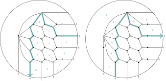

Articles
-
This work builds upon the broken line convexity notion I introduced with M.-W. Cheung and A. Nájera Chávez. We develop the fundamentals of the theory of broken line convex geometry. Our expectation — and the motivation for writing this paper — is that this convex geometry theory will encode the algebraic geometry of compactifications of cluster varieties, just like usual convex geometry encodes the algebraic geometry of toric varieties.
First, we introduce a version of Minkowsi addition and describe how it interacts with broken line convexity. Next we tackle convexity of functions in this theory. We then describe polyhedral broken line convex geometry, complete with discussions of faces, duality, and fans. Our final aim for the paper is to state and prove a broken line convex geometry version of Borisov's duality of nef-partitions, which is where the majority of the remaining work lies.
-
ongoing
Tropical Theta Functions and Valuations in Arbitrary Dimension
This paper establishes two important results in our quest to extend toric geometry concepts to the world of cluster varieties. These are called "$\vartheta$-reciprocity" and the "valuative independence theorem". Both involve a pairing between the tropicalizations of mirror cluster varieties. In the toric setting, these tropical spaces are the cocharacter lattices of dual tori — or the character and cocharacter lattices of either of the dual tori — and we have the evaluation pairing between these dual lattices. In the cluster setting, integral tropical points of a cluster variety \(U\) parametrize \(\vartheta\)-functions on the mirror cluster variety \(U^\vee\). On the other hand, such a tropical point \(\nu\) is by definition a divisorial discrete valuation on the field of rational functions of \(U\), meaning \(\nu= \mathrm{ord}_{D}:\mathbb{C}(U)\setminus \{0\}\to \mathbb{Z}\), where $D$ is some divisor on a variety birational to $U$. Then for $p \in (U^\vee)^{\mathrm{trop}}(\mathbb{Z})$, we can evaluate $\nu(\vartheta_p)$. Of course, we could just as well consider $p(\vartheta_{\nu})$. We show that these two evaluation pairings agree, so there is a canonical pairing between the two tropical spaces. This is the result called $\vartheta$-reciprocity. The valuative independence theorem states that for a linear combination of $\vartheta$-functions, we have $\nu(\sum_p c_p \vartheta_p) = \min\{ \nu(p) \, :\, c_p\neq 0\}$. Both results are very useful in describing $\vartheta$-bases for spaces of sections of line bundles over compactified cluster varieties. $\vartheta$-reciprocity helps to pick out which $\vartheta$-functions on the cluster variety are sections of the given line bundle, and the valuative independence theorem ensures that this collection of $\vartheta$-functions forms a basis, essentially by eliminating the possibility of pole cancelations. A recording of a talk my collaborator Travis Mandel gave on the paper is available here.
-
ongoing
Grassmannians, Plabic Graphs, and Mirror Symmetry for Cluster Varieties
This paper relates two different descriptions of Grassmannians and their Landau-Ginzburg mirrors — one in the framework of Gross-Hacking-Keel-Kontsevich in which the Grassmannian is treated as a compactification of a quotient of a cluster $\mathcal{A}$-variety and the other due to Marsh-Rietsch in which the Grassmannian is treated as a compactification of a fiber of a cluster $\mathcal{X}$-variety. The Landau-Ginzburg mirror family in the first case is a potential on a cluster $\mathcal{X}$-variety, given as the sum of $\vartheta$-functions associated to components of the boundary divisor, while Marsh-Rietsch express the potential in terms of Plücker coordinates on a cluster $\mathcal{A}$-variety. We describe a map that identifies the compactifications on one side of the mirror, show that this map induces a map between their mirrors, and finally show that the induced map in fact identifies the Landau-Ginzburg mirrors. A point of interest here is that the two Landau-Ginzburg potentials are constructed with very different machinery and focus, but they arrive to precisely the same end. These identifications, as well as a reinterpretation of the cluster $\mathcal{X}$-varieties studied by Rietsch-Williams, also lend to a deeper understanding of the Newton-Okounkov bodies and toric degenerations for Grassmannians studied by Rietsch-Williams. Here is a recording of a talk I gave on this work at BIRS and slides for a similar talk I gave at Imperial College London.
-
Convexity is a hugely important theme in the study of toric varieties. In this paper we develop a notion of convexity that plays an analogous role for compactifications of cluster varieties. In greater detail, polarized projective toric varieties are encoded by convex polytopes. Convexity is precisely the condition needed for the integral points of the cone over the polytope to define a basis of Laurent monomials for a graded ring. This ring is the section ring of the polarizing line bundle, and the projective toric variety is produced via the Proj construction. We give a generalization of this picture for projective compactifications of cluster varieties. Instead of Laurent monomials, the relevant functions are $\vartheta$-functions, which are parametrized by integral tropical points of the mirror cluster variety. We give a natural convexity notion — which we call broken line convexity — in the tropicalization of the mirror cluster variety, and show that the integral points of the cone over a set form a basis of $\vartheta$-functions for a graded ring if and only if that set is broken line convex.
-
Newton–Okounkov bodies and minimal models for cluster varieties
This paper is a detailed study of Newton-Okounkov bodies for boundary divisors in compactifications of cluster varieties. Newton-Okounkov bodies are convex sets that encode the asymptoptics of section rings of divisors. They are an important tool in the study of toric degenerations. While the information they encode is purely geometric, to describe a Newton-Okounkov body, some auxiliary (non-geometric) data is introduced, generally in the form of a valuation on the non-zero rational functions of the variety. When the variety in question has a cluster structure and the divisor under consideration is a boundary divisor, we give an intrinsic version of the Newton-Okounkov body that makes no reference to any auxiliary data. This intrinsic Newton-Okounkov body is a broken line convex set in the tropicalization of the mirror cluster variety. If we introduce the auxiliary data of a seed in the cluster structure, we get an identification of the intrinsic Newton-Okounkov body with a usual Newton-Okounkov body. -
Toric degenerations of cluster varieties and cluster duality
In this paper we introduce a new sort of toric degeneration — one that uses a fan construction rather than a polytope construction. We associate such a degeneration to each cluster torus of any cluster "$\mathcal{X}$-variety", and show that the fan encodes a beautiful stratification that is preserved throughout the degeneration. In detail, cluster varieties come in two flavors, $\mathcal{A}$-varieties and $\mathcal{X}$-varieties. Mirror symmetry swaps these flavors. Toric degenerations are usually defined for projective varieties, with a polytope giving a basis for a graded ring, and the multiplication rule for the basis elements degenerating to multiplication of Laurent monomials. Using the Proj construction, this gives a family of polarized projective varieties, degenerating to the polarized toric variety associated to the polytope. $\mathcal{A}$-varieties have projective compactifications and these compactifications admit well-studied toric degenerations of this form. However, $\mathcal{X}$-varieties are generally not separated, so can't possibly have projective compactifications. On the other hand, the tropicalization of an $\mathcal{X}$-variety always has an embedded fan, called the "$\mathbf{g}$-fan". Each "cluster" corresponds to a maximal cone of this fan, with the $\mathcal{X}$ variables of the cluster associated to the generators of the dual cone. This fan gives a very natural partial compactification of the $\mathcal{X}$-variety, called its special completion. (In fact, from a toric geometry perspective, the special completion is a more natural object than the original $\mathcal{X}$-variety.) We deform the gluing relations for the special completion, giving toric gluing relations when coefficients are taken to $0$. This deformation depends on a choice of cluster torus, and for each choice of cluster torus we obtain a toric degeneration whose central fiber is the toric variety defined by the associated linearization of the $\mathbf{g}$-fan. We show that each fiber in this family is stratified by lower dimensional specially completed $\mathcal{X}$-varieties, and the strata degenerate precisely to the torus orbit closures of the toric central fiber. -
The primary aim of this paper is a quantization of the family introduced in the previous paper. Cluster $\mathcal{X}$-varieties come equipped with a Poisson structure, and a natural quantization procedure due to Fock-Goncharov. We extend this quantization to the family of specially completed $\mathcal{X}$-varieties discussed above, building a non-commutative scheme over a polynomial ring that recovers the Fock-Goncharov quantization when we take coefficients to $0$, and recovers the aforementioned family in the $q \to 1$ limit. We use the quantized family to show that the original family is a Poisson scheme over a polynomial ring and the fibers are Poisson schemes over $\mathbb{C}$. Next, there is also a version of quantization for many $\mathcal{A}$-varieties due to Berenstein-Zelevinsky. When it exists, we describe the quantization of families of $\mathcal{A}$-varieties in this framework, then relate the two quantum families with "quantum cluster ensemble maps" — $*$-algebra homomorphisms that commute with quantum cluster mutation with coefficients.
-
Littlewood-Richardson coefficients via mirror symmetry for cluster varieties
This article is my PhD thesis.
Littlewood-Richardson coefficients are the structure constants used to decompose a tensor product of irreducible $\mathrm{GL}_n$ representations as a direct sum. Using the Petr-Weyl theorem, these coefficients can be reinterpreted as dimensions of spaces of sections of line bundles over $\mathrm{Conf}_3( \mathcal{F}\hspace{-1.6pt}\ell)$ — the space of triples of complete flags modulo the diagonal action of $\mathrm{GL}_n$. This space (studied by Fock-Goncharov and Goncharov-Shen) is a minimal model for a cluster variety. I show that the algebra of regular functions for this cluster variety has a canonical basis of $\vartheta$-functions, as do the spaces of sections of line bundles over $\mathrm{Conf}_3(\mathcal{F}\hspace{-1.6pt}\ell)$. So, we can obtain Littlewood-Richardson coefficients by counting basis elements for these spaces of sections. To describe the basis for each line bundle, I compute the Landau-Ginzburg mirror family of $\mathrm{Conf}_3(\mathcal{F}\hspace{-1.6pt}\ell)$. I tropicalize the LG potential and evaluate on tropical points to determine which $\vartheta$-functions are sections of each line bundle. For a particular choice of torus in the cluster atlas, I identify the cone cut out by the linear inequalities with the Knutson-Tao hive cone.
-
Fock-Goncharov conjecture and polyhedral cones for $U \subset \mathrm{SL}_n$ and base affine space $\mathrm{SL}_n/U$
The group of upper triangular unipotent matrices U and the quotient of $\mathrm{SL}_n$ by this subgroup are both partial compactifications of cluster varieties. This quotient is referred to as the base affine space and its algebra of regular functions decomposes as a direct sum of all irreducible representations of $\mathrm{SL}_n$. I show that algebra of regular functions on both the cluster variety in $U$ and in $\mathrm{SL}_n/U$ has a canonical basis of $\vartheta$-functions parametrized by the integral points of the mirror cluster variety. I then compute the Landau-Ginzburg mirror to each partial compactification. By evaluating the tropicalization of the LG potential on each tropical point, I read off which theta functions on the cluster variety extend to the partial compactification. This subset forms a basis for the regular functions on the partial compactification. In the case of $\mathrm{SL}_n/U$, this basis respects the decomposition of the algebra of regular functions as the direct sum of irreducible $\mathrm{SL}_n$ representations, giving a basis for each of these representations. A choice of cluster torus identifies the tropicalization of the mirror cluster variety with a real vector space, and the linear inequalities associated to the tropicalized LG potential produce a polyhedral cone. For a particular choice of torus in the base affine space, this cone can be identified with the Gelfand-Tsetlin cone.
This was my first paper, and it is essentially subsumed by my thesis. There are some interesting arguments here that did not make it into my thesis, but also some errors. I understood the material considerably better by the time I wrote my thesis, so I'd recommend reading that instead.